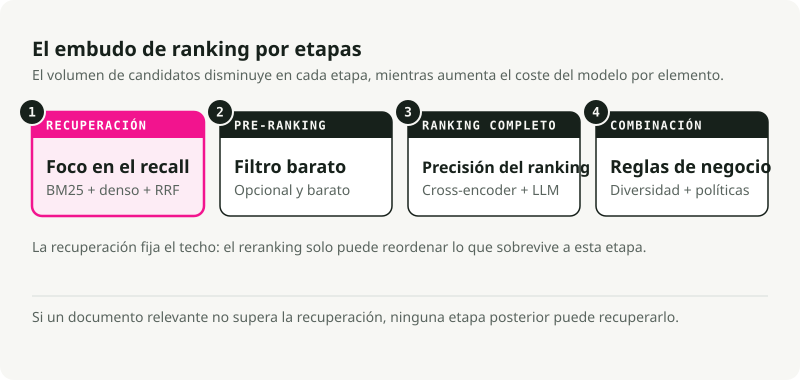
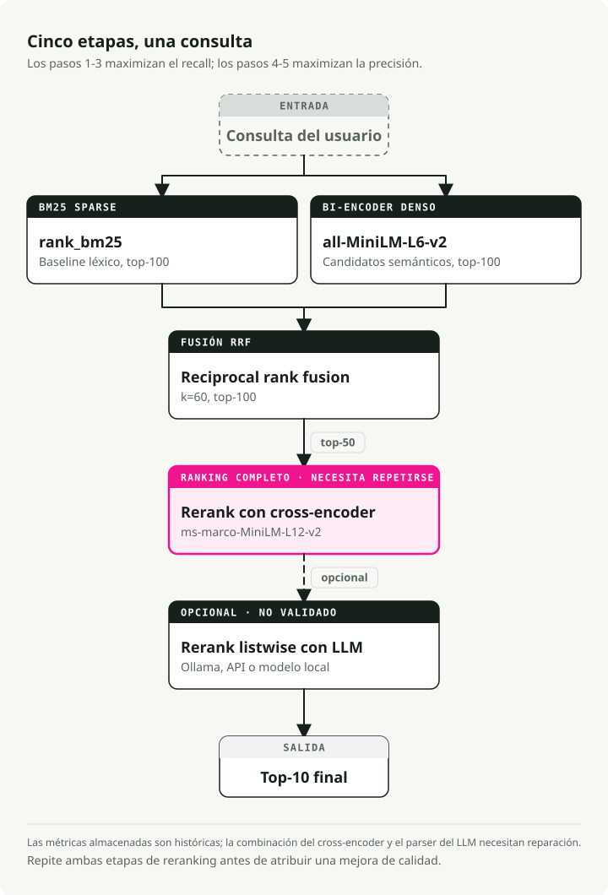
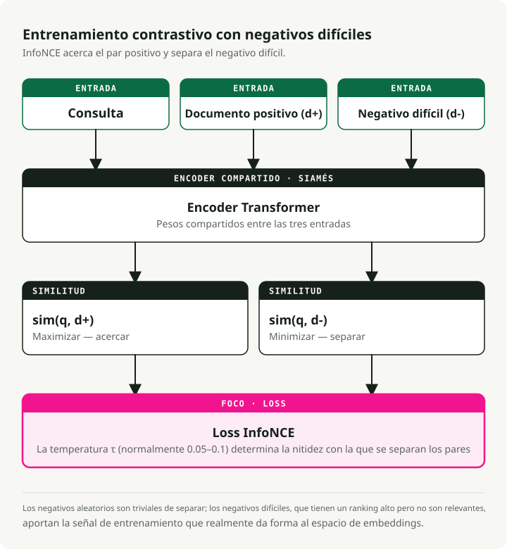
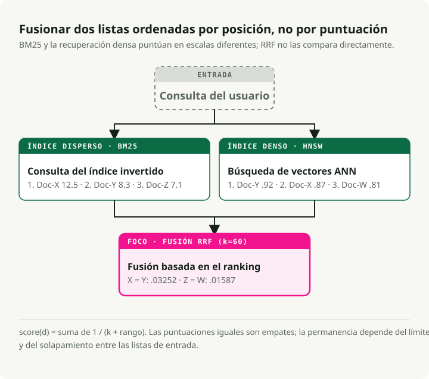
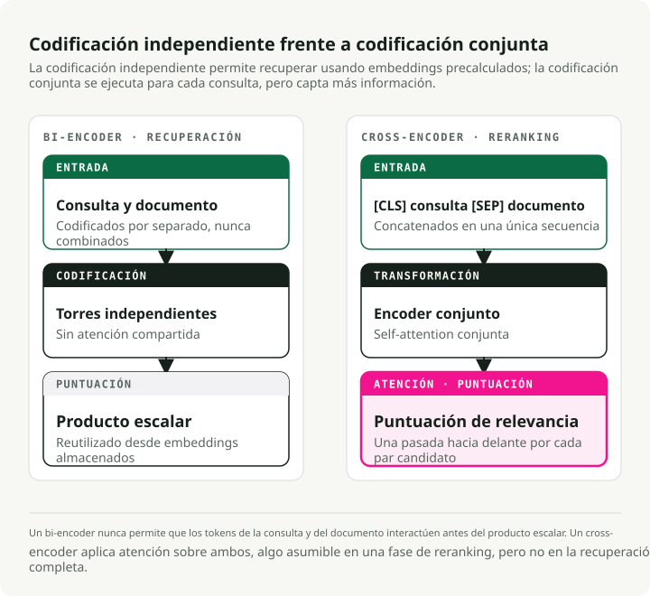
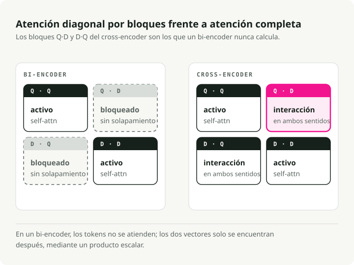
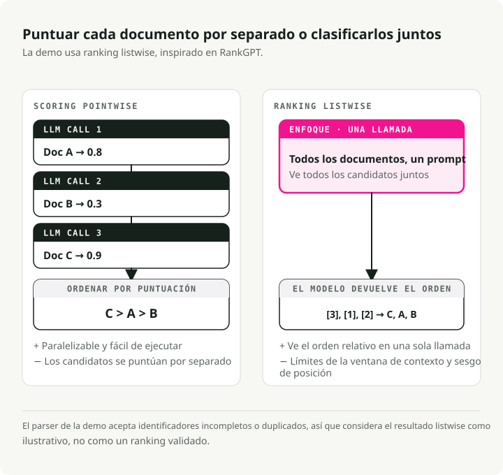
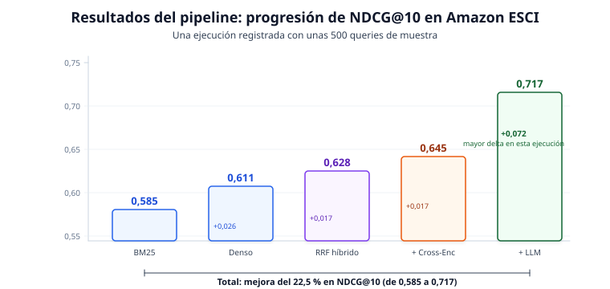
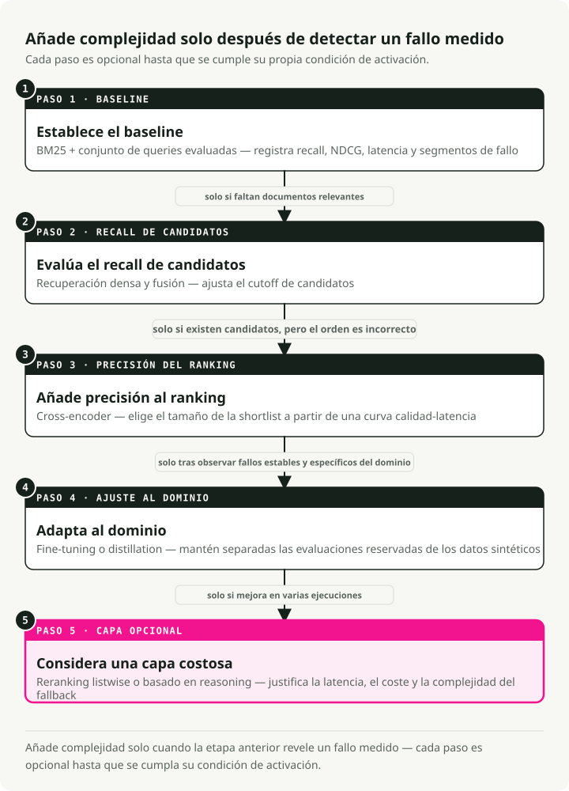

Traducción automática
Este artículo se tradujo automáticamente a partir de la versión original en inglés.
Stack de ranking de búsqueda en 2026: BM25, embeddings, cross-encoders y reranking con LLM
La búsqueda dejó de ser un problema de coincidencia de cadenas hace tiempo. Cuando alguien escribe "wireless headphones" en un motor de búsqueda de productos, espera algo más que artículos que contengan esas dos palabras. Quiere el mejor resultado según relevancia semántica, calidad del producto, preferencias del usuario y disponibilidad. La diferencia entre lo que devuelve BM25 y lo que realmente quieren los usuarios ha cambiado cómo se construyen los sistemas de búsqueda.
Este artículo recorre un stack moderno de ranking de búsqueda: un pipeline multietapa que combina recuperación dispersa con BM25, embeddings semánticos densos, reciprocal rank fusion, reranking con cross-encoder y ranking listwise con LLM. He construido una demo funcional que evalúa cada etapa sobre el dataset de búsqueda de productos Amazon ESCI, para que la contribución de cada capa se vea en números reales.
TL;DR: Un pipeline híbrido multietapa es la opción por defecto más razonable para producción. Ejecuta BM25 y recuperación densa en paralelo, combínalos con Reciprocal Rank Fusion, reordena los supervivientes con un cross-encoder y deja que un LLM se encargue de la capa final de precisión. En el benchmark de Amazon ESCI esto logra una mejora del 22,5% en NDCG@10 frente a BM25 por sí solo (de 0.585 a 0.717). El reranker con LLM aporta el mayor salto individual (+0.072).
Cómo hemos llegado hasta aquí
El ranking de búsqueda ha pasado por tres fases aproximadas, cada una corrigiendo una limitación concreta de la anterior. El stack moderno solo tiene sentido si has visto el camino que ha seguido.
BM25 y recuperación léxica
Durante décadas, BM25 fue la opción por defecto. Es un modelo probabilístico que puntúa documentos por la frecuencia de los términos de la consulta en el documento, normalizada por la longitud del documento y la frecuencia inversa del documento (IDF).
BM25 es muy bueno en el matching exacto de palabras clave. Buscar un código de error concreto, un SKU de producto o un código de estado HTTP funciona porque el sistema solo necesita solapamiento literal de tokens. El problema es el vocabulary mismatch problem: una consulta como "cheap laptop" no encuentra documentos sobre "budget notebook computer" porque las palabras no coinciden. BM25 no tiene ninguna noción de intención semántica.
Aun así, BM25 es una base sólida. Obtiene 0.429 de nDCG@10 medio en los 18 datasets del benchmark BEIR y sigue superando a algunos modelos neuronales en tareas de recuperación argumentativa como Touche-2020.
Recuperación densa y embeddings
BERT y el Transformer trajeron la recuperación densa. En lugar de hacer matching de palabras clave, se proyectan tanto las consultas como los documentos en un espacio vectorial compartido de alta dimensionalidad (normalmente 768 o 1024 dimensiones). La relevancia pasa a ser una similitud del coseno entre dos vectores.
La arquitectura bi-encoder (o "two-tower") procesa la consulta y el documento de forma independiente a través de torres codificadoras separadas, produciendo embeddings de longitud fija. Los vectores de los documentos pueden precomputarse e indexarse offline, y recuperarse rápidamente mediante algoritmos de Approximate Nearest Neighbor (ANN). Ahora "cheap laptop" y "budget notebook" quedan cerca en el espacio vectorial.
Por debajo, los bi-encoders usan una arquitectura siamesa (Sentence-BERT, Reimers & Gurevych, EMNLP 2019): ambas torres comparten los mismos pesos del Transformer. Cada torre procesa su texto de entrada y luego aplica mean pooling sobre los estados ocultos a nivel de token para obtener un único vector de longitud fija (384 o 768 dimensiones son habituales). Compartir pesos sitúa consultas y documentos en el mismo espacio semántico, que es lo que hace que la similitud del coseno tenga sentido desde el principio.
Estos modelos se entrenan con contrastive learning, normalmente con la pérdida InfoNCE. Dado un batch de pares (query, positive_document), el objetivo maximiza sim(query, positive_doc) mientras minimiza sim(query, negative_docs). Los negativos provienen de los positivos de otras consultas del mismo batch (in-batch negatives). Un parámetro de temperatura \(\\tau\) controla lo afilada que es la distribución: valores más bajos fuerzan al modelo a hacer distinciones más duras entre positivos y negativos.
La mayor palanca de rendimiento en un bi-encoder es la calidad de los datos de entrenamiento. Los modelos parten de pares (query, positive_document) de datasets como MS MARCO, y luego se amplían con hard negatives: documentos que el modelo actual rankea alto pero que en realidad no son relevantes. Los negativos aleatorios son demasiado fáciles y no aportan nada al aprendizaje. Los hard negatives obligan al modelo a aprender distinciones sutiles. El framework SimANS (Zhou et al., EMNLP 2022) formaliza esto: excluir negativos fáciles (rango demasiado bajo) y posibles falsos negativos (rango demasiado alto), y entrenar sobre la "zona media difícil".
El coste es el cuello de botella de representación. Los bi-encoders comprimen todo el matiz semántico en un único vector de tamaño fijo, así que a menudo pierden interacciones finas entre términos concretos de la consulta y contenido concreto del documento.
Cross-encoders y LLMs
Los cross-encoders (Nogueira & Cho, 2019) introducen la consulta y el documento en un Transformer conjuntamente como una secuencia concatenada ([CLS] Query [SEP] Document), de modo que cada token de la consulta puede atender a cada token del documento mediante self-attention completa. Esa interacción profunda capta matices que la codificación independiente no ve.
El reranking con LLM va un paso más allá. Un large language model actúa como ranker listwise zero-shot, en la práctica como un juez humano capaz de razonar por qué un documento es mejor que otro. RankGPT (Sun et al., EMNLP 2023 Outstanding Paper) mostró que GPT-4 como reranker listwise zero-shot iguala o supera a métodos supervisados.
La precisión es alta. También lo es el coste. No puedes precomputar puntuaciones, y la inferencia es 100x más lenta que la recuperación con bi-encoder. Ese coste es lo que fuerza el patrón arquitectónico que ves en la búsqueda moderna: el embudo multietapa.
El embudo multietapa
Ejecutar un cross-encoder o un LLM caro sobre millones de documentos no es viable, así que los stacks modernos de búsqueda usan un embudo. Cada etapa reduce el conjunto de candidatos mientras la complejidad del modelo aumenta.
Una búsqueda de una sola etapa es o demasiado lenta (modelos complejos sobre todo) o demasiado imprecisa (modelos simples en todas partes). El embudo encuentra el equilibrio, y es la disposición estándar en producción a escala.

| Stage | Candidate Pool | Primary Objective | Model Complexity | Latency Budget |
|---|---|---|---|---|
| Retrieval | 10^9 - 10^12 | Maximum Recall | Low (BM25, Bi-Encoders) | < 50ms |
| Pre-Ranking | 10^4 - 10^5 | Efficient Filtering | Medium (Two-Tower, GBDT) | < 100ms |
| Full Ranking | 10^2 - 10^3 | Maximum Precision | High (Cross-Encoders, LLMs) | < 500ms |
| Blending | 10^1 - 10^2 | Diversity and Safety | Rules and Multi-Objective | < 20ms |
La recuperación fija el techo y el reranking optimiza dentro de ese límite. Si un documento relevante no sobrevive a la recuperación, ningún modelo posterior puede recuperarlo.
La demo: un pipeline de cinco etapas
Para aterrizar esto, he construido una demo de search-ranking-stack que ejecuta un pipeline de cinco etapas sobre el benchmark de búsqueda de productos Amazon ESCI. Cada etapa se mide de forma independiente para que puedas ver de dónde vienen realmente las mejoras.

El pipeline:
- BM25 Sparse Retrieval — baseline léxica (rank_bm25)
- Dense Bi-Encoder Retrieval — búsqueda semántica (all-MiniLM-L6-v2)
- Hybrid RRF Fusion — combina resultados sparse y dense
- Cross-Encoder Reranking — scoring fino de relevancia (ms-marco-MiniLM-L-12-v2)
- LLM Listwise Reranking — ranking final con capacidad de razonamiento (Ollama / Claude / local)
Los pasos 1--3 son la etapa de retrieval del embudo (maximizar recall); los pasos 4--5 son la etapa de full ranking (maximizar precisión). La demo omite pre-ranking y blending. Con ~8.500 documentos, puedes permitirte enviar todos los resultados híbridos directamente al reranking.
Quick Start
git clone https://github.com/slavadubrov/search-ranking-stack.git
cd search-ranking-stack
uv sync
# Download and sample ESCI dataset (~2.5GB download, ~5MB sample)
uv run download-data
# Run the full pipeline (without LLM reranking)
uv run run-all
# Run with LLM reranking via Ollama
uv run run-all --llm-mode ollama
El dataset: Amazon ESCI
La demo usa el Amazon Shopping Queries Dataset (ESCI) de la KDD Cup 2022: un benchmark real de búsqueda de productos con etiquetas de relevancia graduada de cuatro niveles:
| Label | Gain | Meaning | Example (Query: "wireless headphones") |
|---|---|---|---|
| Exact (E) | 3 | Satisfies all query requirements | Sony WH-1000XM5 Wireless Headphones |
| Substitute (S) | 2 | Functional alternative | Wired headphones with Bluetooth adapter |
| Complement (C) | 1 | Related useful item | Headphone carrying case |
| Irrelevant (I) | 0 | No meaningful relationship | USB charging cable |
La relevancia graduada importa porque permite usar NDCG (Normalized Discounted Cumulative Gain), que separa un ranking "perfecto" de uno "simplemente aceptable". Las métricas binarias tratan ambos como igual de relevantes y no distinguen distintos niveles de relevancia en la misma posición.
He muestreado ~500 consultas "difíciles" (la flag small_version en ESCI) con ~8.500 productos y ~12.000 juicios. Lo bastante pequeño para ejecutarlo en un portátil en minutos, y lo bastante grande para dar resultados estadísticamente significativos.
Retrieval: búsqueda híbrida
La tarea de la capa de retrieval es maximizar el recall: lanzar la red lo más lejos posible para que no se escape nada relevante.
BM25: la baseline léxica
BM25 puntúa documentos por el solapamiento de términos con la consulta, con saturación de frecuencia de término y normalización por longitud del documento:
Donde \(\\text{IDF}(t)\) es la frecuencia inversa de documento del término \(t\), \(tf(t,d)\) es la frecuencia del término en el documento \(d\), \(|d|\) es la longitud del documento y \(\\text{avgdl}\) es la longitud media de los documentos del corpus. Importan dos parámetros: \(k_1\) (normalmente 1.2--2.0) controla la saturación de TF — con qué rapidez los términos repetidos dejan de aportar valor — y \(b\) (normalmente 0.75) controla la normalización por longitud del documento.
La implementación es corta. Tokenización simple por espacios con rank_bm25:
# src/search_ranking_stack/stages/s01_bm25.py
from rank_bm25 import BM25Okapi
def run_bm25(data: ESCIData, top_k: int = 100):
doc_ids = list(data.corpus.keys())
tokenized_corpus = [text.lower().split() for text in data.corpus.values()]
bm25 = BM25Okapi(tokenized_corpus)
results = {}
for query_id, query_text in data.queries.items():
scores = bm25.get_scores(query_text.lower().split())
top_indices = np.argsort(scores)[::-1][:top_k]
results[query_id] = {doc_ids[idx]: float(scores[idx]) for idx in top_indices}
return results
BM25 alcanza un Recall@100 de 0.741: el 74% de los productos relevantes aparece en algún punto del top 100. No está mal para un método puramente léxico, pero el 26% de los elementos relevantes queda invisible para cualquier etapa posterior.
Dense Bi-Encoder: recuperación semántica
El bi-encoder proyecta consultas y documentos de forma independiente a un espacio de embeddings compartido:
# src/search_ranking_stack/stages/s02_dense.py
from sentence_transformers import SentenceTransformer
model = SentenceTransformer("sentence-transformers/all-MiniLM-L6-v2")
# Encode corpus once, cache to disk
corpus_embeddings = model.encode(
doc_texts,
batch_size=128,
normalize_embeddings=True, # Cosine sim = dot product
convert_to_numpy=True,
)
# At query time: encode query, compute dot product
query_embeddings = model.encode(query_texts, normalize_embeddings=True)
similarity_matrix = np.dot(query_embeddings, corpus_embeddings.T)
Con embeddings normalizados, la similitud del coseno se reduce a un producto escalar: una única multiplicación de matrices recupera todas las consultas de una vez. El modelo de 22M de parámetros all-MiniLM-L6-v2 funciona cómodamente en CPU y eleva Recall@100 hasta 0.825, una mejora del 11% frente a BM25.
Cómo aprenden buenas representaciones los bi-encoders
El entrenamiento de bi-encoders suele ejecutarse en dos fases. Primero, el modelo se preentrena sobre datasets de Natural Language Inference (NLI) y Semantic Textual Similarity (STS), que enseñan comprensión semántica general; el modelo aprende que "a cat sits on a mat" y "a feline rests on a rug" deberían tener embeddings similares. Después, se ajusta con fine-tuning sobre datos específicos de retrieval como MS MARCO, donde aprende que una consulta de búsqueda y su pasaje relevante deben quedar más cerca que la consulta y pasajes irrelevantes.
El ingrediente crítico en la segunda fase es el hard negative mining. Los negativos aleatorios (por ejemplo, un documento sobre cocina emparejado con una consulta sobre auriculares) son trivialmente fáciles de distinguir; el modelo no aprende nada de ellos. En su lugar, usas el propio modelo actual para encontrar documentos que rankea alto pero que en realidad no son relevantes.
El enfoque SimANS (Simple Ambiguous Negatives Sampling) formaliza esto: rankea todos los documentos con el bi-encoder actual, luego excluye negativos fáciles (rankeados demasiado abajo — el modelo ya los maneja) y posibles falsos negativos (rankeados demasiado arriba — podrían ser relevantes pero no estar etiquetados). La "zona media difícil" produce la máxima señal de aprendizaje.
# What a training triplet looks like after hard negative mining
training_triplet = {
"query": "wireless noise canceling headphones",
"positive": "Sony WH-1000XM5 Wireless Noise Cancelling Headphones",
"negative": "Sony headphone replacement ear pads", # Hard negative: same brand, related product, but wrong intent
}
# The bi-encoder must learn that "ear pads" is NOT what the user wants,
# even though it shares many tokens with the positive document.
La función de pérdida contrastiva (InfoNCE) une todo esto. Para cada consulta \(q\) con documento positivo \(d^+\) y un conjunto de documentos negativos \(\\{d^-_1, \\ldots, d^-_n\\}\):
Donde \(\\text{sim}(q, d)\) es la similitud del coseno entre los embeddings de consulta y documento, y \(\\tau\) es el parámetro de temperatura (normalmente 0.05--0.1) que controla lo afilada que es la distribución — valores más bajos hacen que la pérdida sea más sensible a hard negatives. Básicamente es una softmax cross-entropy: empuja hacia arriba la similitud del par positivo respecto a todos los negativos. Cuando \(\\tau\) es pequeño, incluso pequeñas diferencias de similitud producen gradientes grandes, lo que obliga al modelo a hacer distinciones más finas.

Servir embeddings de bi-encoder a escala
La ventaja arquitectónica de los bi-encoders es la clara separación offline/online. Todos los embeddings de documentos se calculan una sola vez en el momento de indexación y se almacenan en un índice vectorial. En tiempo de consulta, solo la consulta necesita un único forward pass por el encoder (~5ms), seguido de una búsqueda ANN sobre embeddings precomputados (~10ms). Esa asimetría es lo que hace práctica la recuperación densa a escala.
En la demo, las cifras son modestas: 8.500 documentos \(\\times\) 384 dimensiones \(\\times\) 4 bytes por float = ~13 MB de embeddings. A escala de producción, las cifras dejan de ser modestas: 1.000 millones de documentos con embeddings de 768 dimensiones necesitan ~3 TiB de almacenamiento. Ahí entran la cuantización (comprimir floats de 32 bits a enteros de 8 bits), la product quantization (descomponer vectores en subespacios) y los índices sobre SSD como DiskANN. La sección Vector Indexing: HNSW vs. IVF cubre los algoritmos de indexación.
Por qué híbrido: BM25 y dense tienen fallos complementarios
Ningún método por sí solo es suficiente. BM25 gana con nombres propios, SKUs de producto específicos y códigos de error: "iPhone 15 Pro Max 256GB" necesita matching exacto de tokens. La recuperación densa gana con el vocabulary mismatch: para que "cheap laptop" encuentre "budget notebook computer" hace falta comprensión semántica.
La solución estándar es la búsqueda híbrida: ejecutar ambos métodos de retrieval en paralelo y luego fusionar los resultados.
Reciprocal Rank Fusion (RRF)
El reto de la búsqueda híbrida es que BM25 y la recuperación densa producen scores en escalas completamente distintas. Las puntuaciones de BM25 no están acotadas (0 a 100+) y la similitud del coseno está acotada entre -1 y 1. Una combinación lineal simple necesita ajuste continuo para no romperse.

Reciprocal Rank Fusion (Cormack et al., 2009) descarta por completo las puntuaciones crudas y usa solo la posición en el ranking:
Donde \(k\) es una constante de suavizado (normalmente 60) que reduce el dominio de los outliers. RRF recompensa elementos que aparecen de forma consistente cerca de la parte alta en ambos métodos, incluso si un sistema les da mucha más puntuación que el otro. Al basarse en el ranking, el problema de la diferencia de escalas desaparece.
La implementación:
# src/search_ranking_stack/stages/s03_hybrid_rrf.py
def reciprocal_rank_fusion(ranked_lists, k=60, top_k=100):
fused_results = {}
for query_id in all_query_ids:
rrf_scores = defaultdict(float)
for results in ranked_lists:
sorted_docs = sorted(results[query_id].items(),
key=lambda x: x[1], reverse=True)
for rank, (doc_id, _score) in enumerate(sorted_docs, start=1):
rrf_scores[doc_id] += 1.0 / (k + rank)
sorted_rrf = sorted(rrf_scores.items(),
key=lambda x: x[1], reverse=True)[:top_k]
fused_results[query_id] = dict(sorted_rrf)
return fused_results
Hybrid RRF llega a Recall@100 de 0.842 y NDCG@10 de 0.628: supera tanto a BM25 (0.585) como a Dense (0.611) por separado. Los documentos solo necesitan rankear bien en uno de los métodos para sobrevivir a la fusión.
Reranking con cross-encoder
Con 100 candidatos híbridos por consulta, ya puedes permitirte un modelo más caro. El cross-encoder procesa la consulta y el documento juntos a través de un único Transformer, con cross-attention completa entre todos los tokens.

Por qué importa la cross-attention
La diferencia real está en la matriz de atención. En un bi-encoder, la atención es diagonal por bloques: los tokens de la consulta solo atienden a otros tokens de la consulta, y los tokens del documento solo a otros tokens del documento. Las dos representaciones nunca se encuentran a nivel de token; solo se cruzan al final mediante un producto escalar. Un cross-encoder calcula la matriz de atención completa, donde cada token de la consulta atiende a cada token del documento y viceversa. Esa cross-attention es lo que desbloquea una interacción profunda a nivel de token.

En un bi-encoder, la consulta "apple" produce el mismo embedding cada vez. Se codifica de forma independiente, antes de ver ningún documento. Un cross-encoder ve consulta y documento simultáneamente, así que puede resolver la ambigüedad en contexto. Las ventajas van mucho más allá de la polisemia:
- Negación: una consulta como "headphones that are not wireless" — los embeddings de bi-encoder para "not wireless" son casi idénticos a los de "wireless" porque la negación apenas desplaza el vector con mean pooling. Un cross-encoder ve el token "not" atendiendo directamente a "wireless" y puntúa correctamente más alto los auriculares con cable.
- Calificación: una consulta como "laptop under \\(500" — la restricción de precio modifica la relevancia. Un cross-encoder puede atender desde "\\\)500" al precio mencionado en la descripción del producto y comprobar si se cumple la restricción.
La entrada del cross-encoder se formatea como [CLS] query tokens [SEP] document tokens [SEP]. [CLS] es un token de clasificación cuyo estado oculto final se pasa por una cabeza lineal para producir una única puntuación de relevancia. Los segment embeddings distinguen los tokens de la consulta de los del documento, y [SEP] marca la frontera entre segmentos.
Cómo se entrenan los cross-encoders
El entrenamiento de cross-encoders es conceptualmente más simple que el de bi-encoders. El modelo recibe ternas (query, document, relevance_label) y aprende a predecir la etiqueta con aprendizaje supervisado estándar; no hace falta pérdida contrastiva.
# Cross-encoder training data format
training_example = {
"query": "wireless headphones",
"document": "Sony WH-1000XM5 Wireless Headphones",
"label": 1.0, # Relevant
}
# Forward pass: [CLS] hidden state → Linear layer → sigmoid → score
# Loss: binary cross-entropy between predicted score and label
La cabeza de clasificación se sitúa sobre el estado oculto final del token [CLS]: una sola capa lineal proyecta la dimensión oculta a un escalar, seguida de una sigmoide. Para etiquetas binarias de relevancia, funciona binary cross-entropy; para etiquetas graduadas como la escala de cuatro niveles de ESCI, funciona mejor la pérdida MSE porque preserva la relación ordinal entre grados.
El hard negative mining importa aún más para cross-encoders que para bi-encoders. Entrenar cross-encoders es caro: cada ejemplo necesita un forward pass completo por la secuencia concatenada, así que no puedes permitirte gastar cómputo en negativos trivialmente fáciles. La receta práctica: usar un bi-encoder para recuperar los top-K candidatos de cada consulta de entrenamiento y extraer hard negatives de rangos concretos (por ejemplo, posiciones 10–100). Eso da al cross-encoder ejemplos en los que distinguir lo relevante de lo irrelevante realmente requiere interacción profunda a nivel de token.
# src/search_ranking_stack/stages/s04_cross_encoder.py
from sentence_transformers import CrossEncoder
model = CrossEncoder("cross-encoder/ms-marco-MiniLM-L-12-v2")
def run_cross_encoder(data, hybrid_results, top_k_rerank=50):
for query_id, query_text in data.queries.items():
candidates = list(hybrid_results[query_id].items())[:top_k_rerank]
# Form (query, document) pairs for joint encoding
pairs = []
doc_ids = []
for doc_id, _ in candidates:
doc_text = data.corpus.get(doc_id, "")[:2048]
pairs.append([query_text, doc_text])
doc_ids.append(doc_id)
# Score all pairs with full cross-attention
scores = model.predict(pairs, batch_size=64)
# Rerank by cross-encoder score
scored_docs = sorted(zip(doc_ids, scores),
key=lambda x: x[1], reverse=True)
reranked_results[query_id] = {
doc_id: float(score) for doc_id, score in scored_docs
}
El modelo de 33M de parámetros ms-marco-MiniLM-L-12-v2 promedia unos 100ms por consulta en CPU para 50 candidatos. NDCG@10 sube hasta 0.645: un sólido +0.017 sobre la recuperación híbrida.
El compromiso velocidad-calidad
¿Por qué no usar cross-encoders para todo? Porque la precomputación es imposible. Los embeddings de documentos del bi-encoder son independientes de la consulta, así que se calculan una vez y se almacenan. La salida de un cross-encoder depende de la consulta y del documento juntos. La puntuación de relevancia para "wireless headphones" emparejada con un producto de Sony proviene de toda la cross-attention entre esos tokens concretos. No puedes cachearla ni reutilizarla para otra consulta.
La diferencia de coste es clara. Una recuperación con bi-encoder necesita 1 forward pass (para codificar la consulta) más N productos escalares contra embeddings de documentos precomputados; los productos escalares son trivialmente baratos. Un cross-encoder necesita N forward passes completos de Transformer, cada uno procesando la secuencia concatenada consulta + documento con coste \(O(L^2)\) para longitud combinada \(L\). Para 50 candidatos con una longitud media combinada de 128 tokens, eso son 50 forward passes separados por 12 capas Transformer. Con 100.000 candidatos, estás hablando de minutos en una GPU moderna frente a ~17ms para un bi-encoder.
La regla que confirma la demo: Recall@100 se mantiene plano en 0.842 a lo largo de ambas etapas de reranking. El reranking puede reordenar resultados, pero nunca añadir documentos. La recuperación fija el techo.
Reranking listwise con LLM
La etapa final usa un LLM para reranking listwise. En lugar de puntuar cada documento de forma independiente (pointwise), el LLM ve a la vez los 10 mejores resultados y produce un ranking completo. Este enfoque, inspirado en RankGPT, permite que el modelo compare productos entre sí, algo que los modelos pointwise no pueden hacer.

El prompt listwise
La plantilla del prompt pide al LLM que tenga en cuenta la jerarquía de relevancia de ESCI:
# src/search_ranking_stack/stages/s05_llm_rerank.py
def _create_listwise_prompt(query, documents, max_words=200):
n = len(documents)
doc_texts = []
for i, (doc_id, doc_text) in enumerate(documents, start=1):
words = doc_text.split()[:max_words]
doc_texts.append(f"[{i}] {' '.join(words)}")
return (
f"I will provide you with {n} product listings, each indicated by "
f"a numerical identifier [1] to [{n}]. Rank the products based on "
f'their relevance to the search query: "{query}"\n\n'
"Consider:\n"
"- Exact matches should rank highest\n"
"- Substitutes should rank above complements\n"
"- Irrelevant products should rank lowest\n\n"
f"{chr(10).join(doc_texts)}\n\n"
"Output ONLY a comma-separated list of identifiers: [3], [1], [2], ...\n"
"Do not explain your reasoning."
)
Tres modos de ejecución
La demo soporta tres backends para el reranking con LLM:
| Mode | Model | How It Runs |
|---|---|---|
ollama |
llama3.2:3b (configurable) |
Local via Ollama API |
api |
claude-haiku-4-5-20251001 |
Anthropic API |
local |
Qwen/Qwen2.5-1.5B-Instruct |
HuggingFace Transformers |
Parsing y fallback
Las salidas de los LLM no son deterministas, así que importa tener un parsing robusto y una ruta de fallback:
def _parse_ranking(output: str, n: int) -> list[int] | None:
"""Parse LLM output to extract ranking order."""
matches = re.findall(r"\[(\d+)\]", output)
if not matches:
return None
positions = [int(m) - 1 for m in matches]
# Pad with remaining positions if LLM returned partial output
if len(positions) < n:
seen = set(positions)
for i in range(n):
if i not in seen:
positions.append(i)
return positions[:n]
Si el parsing falla por completo, el sistema vuelve al orden del cross-encoder. Cualquier integración de LLM en producción necesita ese tipo de fallback: no quieres que un fallo de parsing degrade los resultados por debajo de la etapa anterior.
Resultados: cada etapa se gana su sitio
Estos son los resultados de ejecutar el pipeline completo sobre ~500 consultas de ESCI:

| Stage | NDCG@10 | MRR@10 | Recall@100 | NDCG Delta |
|---|---|---|---|---|
| BM25 | 0.585 | 0.812 | 0.741 | -- |
| Dense Bi-Encoder | 0.611 | 0.808 | 0.825 | +0.026 |
| Hybrid (RRF) | 0.628 | 0.834 | 0.842 | +0.017 |
| + Cross-Encoder | 0.645 | 0.860 | 0.842 | +0.017 |
| + LLM Reranker | 0.717 | 0.901 | 0.842 | +0.072 |
Observaciones clave
La búsqueda híbrida supera a cualquiera de los métodos por separado. El NDCG de RRF (0.628) está por encima tanto de BM25 (0.585) como de Dense (0.611). La recuperación sparse y dense tienen modos de fallo complementarios, y combinarlas recupera documentos que cualquiera de las dos por separado perdería.
El recall se fija en retrieval. Recall@100 se mantiene plano en 0.842 a lo largo de ambas etapas de reranking. Los rerankers reordenan, no añaden documentos. Si quieres más recall, corrige la capa de retrieval.
El reranker con LLM aporta el mayor salto individual. La ganancia de +0.072 NDCG@10 del cross-encoder al reranker con LLM es la mayor mejora de una sola etapa en el pipeline. El LLM puede razonar sobre la relevancia de productos: sabe, por ejemplo, que un "wireless headphone stand" es un complemento, no una coincidencia exacta, y ese tipo de discriminación es justo lo que los modelos estadísticos suelen perder.
Dense supera a BM25 en este dataset. El dominio de búsqueda de productos en ESCI tiene un vocabulary mismatch severo (los usuarios dicen "cheap laptop"; los productos dicen "budget notebook computer"), lo que favorece las fortalezas de la recuperación semántica.
Evaluación: medir lo que importa
La demo usa tres métricas complementarias. Cada una mira el ranking desde un ángulo distinto:
NDCG@10 (métrica principal)
Normalized Discounted Cumulative Gain mide la calidad del ranking top-10 usando relevancia graduada. Recompensa situar documentos muy relevantes cerca de la parte alta con un descuento logarítmico:
NDCG es la única métrica que aprovecha por completo la relevancia graduada de cuatro niveles de ESCI: un sistema que coloca una coincidencia Exact en la posición 1 puntúa más alto que uno que coloca ahí un Substitute. Por eso es la métrica principal para la calidad global de búsqueda.
MRR@10 (experiencia de usuario)
Mean Reciprocal Rank mide lo rápido que el usuario encuentra el primer resultado relevante. Si el primer resultado relevante está en la posición 1, MRR = 1.0. En la posición 3, el reciprocal rank es 0.333. Captura el "tiempo hasta la satisfacción": aunque el NDCG sea alto, a los usuarios les importa sobre todo el primer buen resultado.
Recall@100 (cobertura de retrieval)
Recall mide qué fracción de todos los documentos relevantes aparece en algún punto del top-100. Es una métrica de techo: si un documento relevante no se recupera, ningún reranker puede arreglarlo.
Indexación vectorial: HNSW vs. IVF
Los embeddings densos solo se vuelven útiles a escala una vez que tienes un índice ANN (Approximate Nearest Neighbor). La demo usa similitud del coseno por fuerza bruta (que está bien con ~8.500 documentos), pero los sistemas de producción necesitan índices especializados.
HNSW (Hierarchical Navigable Small World)
HNSW (Malkov & Yashunin, 2016) es una elección habitual para entornos de producción que necesitan latencia por debajo de 100ms. Construye un grafo multicapa donde las capas superiores proporcionan conexiones "express" para navegación gruesa y las inferiores ofrecen conexiones densas para refinamiento preciso. Parámetros clave de ajuste: M (conexiones por nodo, normalmente 16–64) y efSearch (beam width en tiempo de consulta; usa al menos 512 para objetivos de recall por encima de 0.95).
La debilidad de HNSW es el tombstone problem: cuando se eliminan registros, dejan nodos fantasma en el grafo. Con el tiempo, esto crea regiones inaccesibles, lo que en la práctica oculta partes de tus datos a la búsqueda. No es una preocupación teórica: incluso bases de datos vectoriales modernas como Qdrant, que usa HNSW en exclusiva, informan de degradación en la calidad de búsqueda tras muchas eliminaciones, lo que obliga a reconstruir el índice por completo. Si tu dataset tiene actualizaciones o borrados frecuentes, planifica reindexaciones periódicas o considera alternativas basadas en IVF.
IVF (Inverted File)
Los índices IVF particionan el espacio vectorial en celdas de Voronoi mediante clustering con k-means. En tiempo de consulta, solo se escanean los nprobe clusters más cercanos al centroide de la consulta. IVF es más eficiente en memoria y más resistente a datasets dinámicos: las eliminaciones son limpias, sin nodos inaccesibles. Los tiempos de construcción son entre 4x y 32x más rápidos que con HNSW.
Para escalas extremas, IVF_RaBitQ (Gao & Long, SIGMOD 2024) comprime vectores en coma flotante en representaciones de un solo bit. En espacios de alta dimensionalidad, el signo de una coordenada (+/-) contiene suficiente información angular para calcular similitud.
| Feature | HNSW (Graph) | IVF (Cluster) |
|---|---|---|
| Query Speed | Exceptional | Moderate |
| Build Speed | Slow | Fast (4x-32x faster) |
| Memory | High (RAM-bound) | Low |
| Deletions | Problematic (tombstones) | Clean |
| Best For | Static, latency-critical | Dynamic, memory-constrained |
Guía práctica de Uber: optimizaron la recuperación ANN reduciendo el parámetro de búsqueda K a nivel de shard de 1.200 a 200, logrando una reducción de latencia del 34% y un ahorro de CPU del 17% con un impacto mínimo sobre el recall.
La capa LLM: más allá del reranking
Los LLM no solo están mejorando la etapa de reranking. También están cambiando el resto del pipeline de búsqueda.
Comprensión de consultas
La expansión y reescritura de consultas con LLM ataca el vocabulary mismatch antes incluso de que empiece el retrieval. Query2doc (Wang et al., EMNLP 2023) genera pseudodocumentos mediante prompting few-shot a un LLM y los concatena con las consultas originales, logrando una mejora del 3–15% en BM25 sobre MS MARCO sin ningún fine-tuning. El LLM "rellena" vocabulario que la consulta breve del usuario omite.
Patrones prácticos: expansión de abreviaturas, enriquecimiento de entidades, descomposición en subconsultas para razonamiento multi-hop y RAG-Fusion, que genera múltiples variantes de consulta y combina resultados mediante RRF.
LLM-as-a-judge para evaluación
Los LLM son ya la opción por defecto para evaluar calidad de búsqueda en muchos sitios. El framework TALEC logra más del 80% de correlación con juicios humanos usando criterios de evaluación específicos del dominio. Vale la pena leer el enfoque de Pinterest: Llama-3-8B es el teacher offline que genera etiquetas de relevancia en cinco escalas sobre miles de millones de impresiones de búsqueda, superando a multilingual BERT-base en un 12,5% de precisión; esas etiquetas luego se destilan en modelos ligeros de producción.
Cosas que hacen más fiable la evaluación con LLM:
- Pedir a los modelos que expliquen sus valoraciones (mejora mucho la alineación con humanos)
- Usar paneles de modelos diversos para reducir la variabilidad ("replacing judges with juries")
- Tener en cuenta el central tendency bias en etiquetas generadas por LLM
Distilación de conocimiento
Ejecutar un LLM completo para cada consulta es prohibitivamente caro. La solución es la destilación:
- Usar un LLM potente (el teacher) para rerankear miles de consultas de entrenamiento
- Entrenar un cross-encoder pequeño y rápido (el student, ~100M–200M parámetros) para imitar la distribución de ranking del LLM
- Resultado: rendimiento cercano al del LLM con ~10ms de latencia
InRanker destila MonoT5-3B en modelos de 60M y 220M parámetros: una reducción de tamaño de 50x con rendimiento competitivo. El enfoque Rank-Without-GPT produce rerankers listwise open-source de 7B que alcanzan el 97% de la efectividad de GPT-4 usando fine-tuning con QLoRA.
Una nota de optimización de costes de ZeroEntropy: rerankear 75 candidatos y enviar solo los 20 mejores a GPT-4o recorta los costes de API en un 72%, de $162K/día a $44K/día con 10 QPS, manteniendo el 95% de la precisión de respuesta.
Personalización: importa quién está buscando
La relevancia genérica solo llega hasta cierto punto. Una búsqueda de "apple" debería devolver iPhones a un entusiasta de la tecnología y recetas de manzana a alguien que ha estado navegando contenido de cocina.
Modelos two-tower para personalización
Una arquitectura de retrieval habitual para personalización usa un modelo de embeddings two-tower: la torre de consulta codifica búsquedas más perfil de usuario en embeddings; la torre de item codifica items más metadatos. La similitud por producto escalar decide la relevancia, lo que te mantiene en territorio ANN por debajo de 100ms.
Airbnb fue pionera en embeddings de listings usando entrenamiento estilo Word2Vec sobre sesiones de clics; sus canales Search y Similar Listings juntos impulsan el 99% de las conversiones de reserva. OmniSearchSage de Pinterest (WWW 2024) aprende conjuntamente embeddings unificados de consulta, pin y producto, produciendo una mejora de relevancia >8% a 300K requests/second. Uber's Two-Tower Embeddings alimentan el retrieval de Eats Homefeed en ~100ms.
Position bias: la distorsión silenciosa
Los usuarios hacen clic en elementos mejor posicionados independientemente de su relevancia real, lo que crea un bucle de realimentación que se refuerza a sí mismo. La solución de producción más práctica (PAL, Guo et al., RecSys 2019): incluir la posición como feature de entrenamiento y luego fijar position=1 para todos los items en serving. Eso elimina el sesgo del modelo sin necesidad de modelar explícitamente la distribución de clics.
Cerrar la brecha de dominio
Un error habitual en estrategia de búsqueda es asumir que un modelo entrenado con datos web generales (como MS MARCO) funcionará bien en un dominio especializado. Ese es el out-of-domain (OOD) problem.
Generación de datos sintéticos
Los LLM resuelven el problema de escasez de datos etiquetados mediante Generative Pseudo-Labeling (GPL, InPars):
- Coge tu corpus de documentos específico del dominio
- Haz prompting a un LLM con "Generate a search query that this document would answer"
- Usa los pares sintéticos (query, document) para hacer fine-tuning de tu retriever y reranker
Esta técnica ha producido mejoras fuertes en tareas específicas de dominio donde escasean las consultas reales de usuario. Es el puente práctico entre el Nivel 2 y el Nivel 3 en la ruta de madurez.
RMSC: soft tokens para adaptación al dominio
La estrategia RMSC (Robust Multi-Supervision Combining) introduce soft tokens — tokens de dominio [S1], [T1] y tokens de relevancia [H1], [W1] — que indican al modelo qué dominio está procesando y cuánta confianza tiene la señal de supervisión. Entrenar con estos tokens almacena conocimiento específico del dominio en los embeddings de tokens en lugar de sobrescribir los parámetros principales del backbone.
La ruta práctica de madurez
Si estás construyendo este stack hoy, no empieces por la arquitectura más compleja. Sigue esta curva de madurez:

Level 1 (baseline): Postgres pgvector o Elasticsearch. Búsqueda híbrida con BM25 + vector retrieval. Sin reranker.
Level 2 (el reranker): añade un cross-encoder (por ejemplo, bge-reranker-v2-m3 o ms-marco-MiniLM-L-12-v2) para rerankear los 50 mejores resultados. Suele ser el mayor ROI con el menor esfuerzo. El modelo Elastic Rerank (184M parámetros, DeBERTa v3) alcanza 0.565 de nDCG@10 medio en BEIR: una mejora del 39% frente a BM25.
Level 3 (fine-tuning): ajusta con fine-tuning tu modelo de embeddings y tu reranker con datos de dominio usando consultas sintéticas generadas por LLM (GPL/InPars). Aquí es donde el rendimiento específico de dominio empieza a separarse del de modelos genéricos.
Level 4 (estado del arte): añade reranking listwise con LLM para los 5–10 mejores resultados e inyecta señales de personalización. Experimenta con rerankers basados en razonamiento como Rank1, que generan cadenas explícitas de razonamiento antes de hacer juicios de relevancia.
Level 2 es el punto dulce para la mayoría de equipos. Añadir un reranker cross-encoder a una configuración híbrida de búsqueda existente puede mejorar la precisión de forma notable sin rehacer la arquitectura.
La frontera: rerankers con razonamiento y búsqueda agentic
Dos patrones están definiendo hacia dónde va la búsqueda.
Rerankers basados en razonamiento
Rank1 entrena modelos de reranking para generar cadenas explícitas de razonamiento antes de emitir juicios de relevancia, inspirado en DeepSeek-R1 y OpenAI o1. Destila a partir de más de 600.000 ejemplos de trazas de razonamiento y logra estado del arte en el benchmark de razonamiento BRIGHT, a veces con una mejora de 2x frente a rerankers del mismo tamaño. Rank1-0.5B rinde de forma comparable a RankLLaMA-13B pese a ser 25x más pequeño.
La implicación práctica: las consultas intensivas en razonamiento (investigación legal, literatura científica, búsqueda compleja de productos) ganan mucho con el escalado de cómputo en tiempo de inferencia en los rerankers.
Búsqueda agentic
Search-o1 (EMNLP 2025) permite que modelos de razonamiento (en concreto QwQ-32B) generen consultas de búsqueda de forma autónoma cuando encuentran conocimiento incierto a mitad del razonamiento, con una mejora media del 23,2% en exact match frente a RAG estándar en benchmarks de QA multi-hop. La búsqueda es cada vez más una herramienta a la que llaman agentes de IA de forma dinámica, no un producto aislado.
Ideas clave
-
La búsqueda híbrida es la opción por defecto. La evidencia empírica en benchmarks y sistemas de producción es consistente, y todas las bases de datos vectoriales importantes ya la soportan de forma nativa. La demo muestra que RRF NDCG (0.628) supera tanto a BM25 (0.585) como a Dense (0.611).
-
La recuperación fija el techo; el reranking optimiza dentro de él. Recall@100 se mantiene plano en 0.842 a lo largo de ambas etapas de reranking. Invierte primero en calidad de retrieval.
-
Añadir un cross-encoder es el cambio único de mayor ROI para la mayoría de equipos. Incluso un cross-encoder pequeño rerankeando 50 documentos aporta una subida real en NDCG. Empieza por ahí.
-
El reranking listwise con LLM aporta el mayor salto individual de calidad (+0.072 NDCG@10 en la demo), pero a costa de latencia y cómputo. Úsalo de forma selectiva, en el top-10 final.
-
La destilación de conocimiento está haciendo práctico el reranking con calidad de LLM. Las capacidades de modelos grandes se están comprimiendo a tamaños desplegables en cuestión de meses. Un modelo de 7B puede alcanzar el 97% de la efectividad de reranking de GPT-4.
-
La calidad en producción la determina el stack, no un único modelo. Optimiza el pipeline —la interacción entre retrieval, fusión y reranking—, no solo un componente.
El código completo del pipeline está en github.com/slavadubrov/search-ranking-stack. Clónalo, ejecútalo, prueba distintos modelos y parámetros, y mira los números por ti mismo.
Referencias
Papers
- Reciprocal Rank Fusion — Cormack et al., 2009
- RankGPT: LLMs as Zero-Shot Listwise Rerankers — Sun et al., EMNLP 2023 Outstanding Paper
- Rank1: Reasoning-Based Reranking — Weller et al., COLM 2025
- SCaLR: Self-Calibrated Listwise Reranking — Framework de reranking listwise autocorregido
- GCCP: Global-Consistent Comparative Pointwise — Aborda la calibración en ranking pointwise con LLM
- Rank-DistiLLM: Knowledge Distillation for Reranking — Schlatt et al., ECIR 2025
- Query2doc: LLM Query Expansion — Wang et al., EMNLP 2023
- GPL: Generative Pseudo Labeling — Adaptación de dominio para retrieval denso
- InRanker: Distilled Reranker — Reducción de tamaño de 50x con rendimiento competitivo
- Search-o1: Agentic Retrieval — EMNLP 2025
- TALEC: LLM-as-a-Judge for Search — Framework de evaluación
- RMSC: Soft Tokens for Domain Adaptation — Combinación de múltiples supervisiones
- BEIR Benchmark — Thakur et al., NeurIPS 2021
- Sentence-BERT — Reimers & Gurevych, EMNLP 2019
- InfoNCE / CPC — van den Oord et al., 2018
- SimANS: Hard Negative Sampling — Zhou et al., EMNLP 2022
- Passage Reranking with BERT — Nogueira & Cho, 2019
- HNSW — Malkov & Yashunin, 2016
- DiskANN — Subramanya et al., NeurIPS 2019
- RaBitQ — Gao & Long, SIGMOD 2024
- Replacing Judges with Juries — Verga et al., 2024
- RAG-Fusion — Rackauckas, 2024
- InPars — Bonifacio et al., SIGIR 2022
- BRIGHT Benchmark — Su et al., ICLR 2025
- Rank-without-GPT — Zhang et al., ECIR 2025
- Pinterest LLM Search Relevance — Wang et al., 2024
- OmniSearchSage — Agarwal et al., WWW 2024
- PAL: Position-bias Aware Learning — Guo et al., RecSys 2019
Datasets and Benchmarks
- Amazon ESCI: Shopping Queries Dataset — KDD Cup 2022
- BEIR: Benchmarking IR — Benchmark heterogéneo para evaluación zero-shot
- MTEB: Massive Text Embedding Benchmark — Leaderboard de modelos de embeddings
- ESCI Paper — Reddy et al., 2022
Models Used in the Demo
- all-MiniLM-L6-v2 — Bi-encoder de 22M de parámetros
- ms-marco-MiniLM-L-12-v2 — Cross-encoder de 33M de parámetros
- Sentence-Transformers — Framework para modelos de retrieval neuronal
Tools and Platforms
- rank_bm25 — Implementación de BM25 en Python
- pytrec_eval — Toolkit de evaluación TREC
- Elasticsearch — Búsqueda híbrida con Retrievers API
- Vespa — Motor unificado de búsqueda y recomendación
- Weaviate — Base de datos vectorial con búsqueda híbrida
- Qdrant — Base de datos vectorial con consultas multietapa
Industry References
- Airbnb Listing Embeddings — Grbovic & Cheng, KDD 2018
- Uber Delivery Search — Uber Engineering, 2025
- Uber Two-Tower Embeddings — Uber Engineering, 2023
- Elastic Rerank — Elastic, 2024
- ZeroEntropy Reranking Guide — ZeroEntropy, 2025
Demo Project
- search-ranking-stack — Demo funcional con todo el código de este artículo